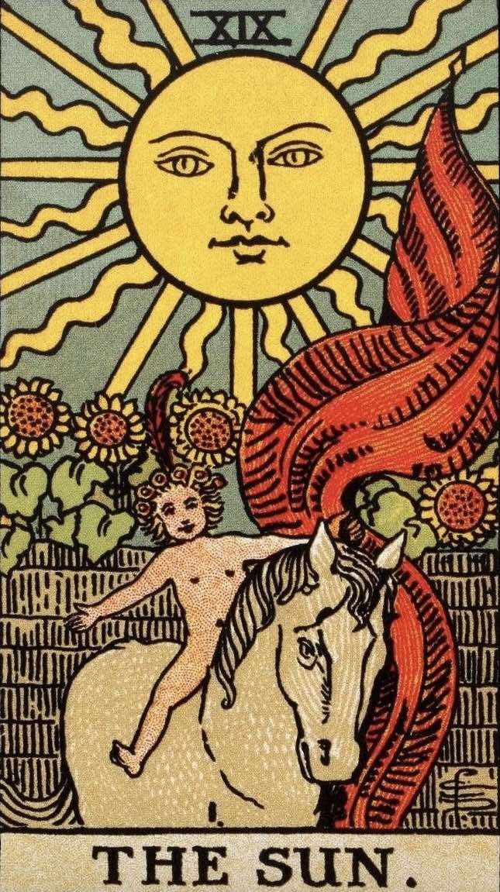
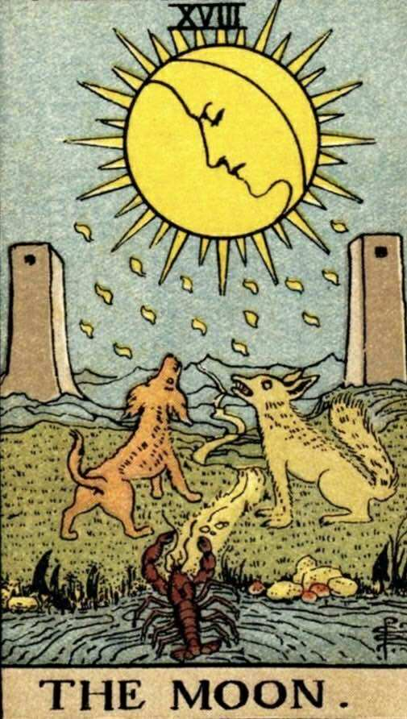
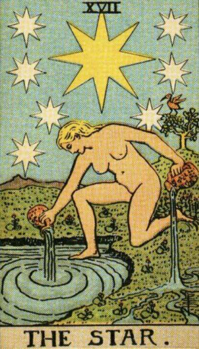
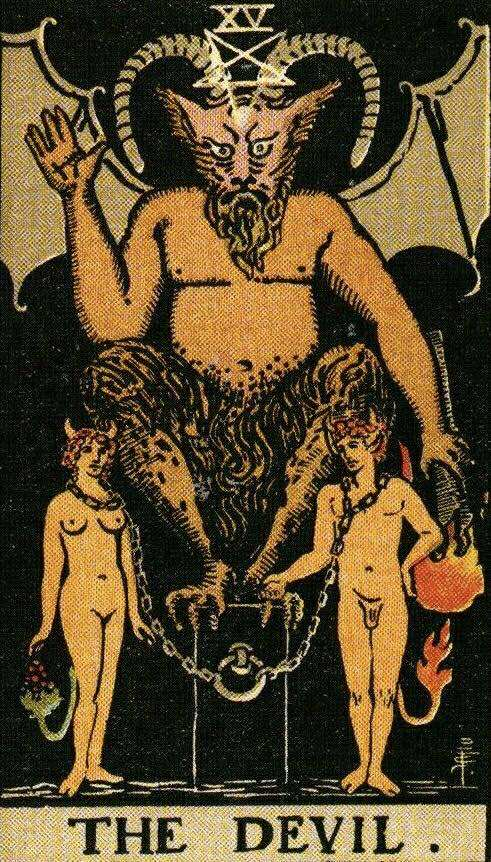
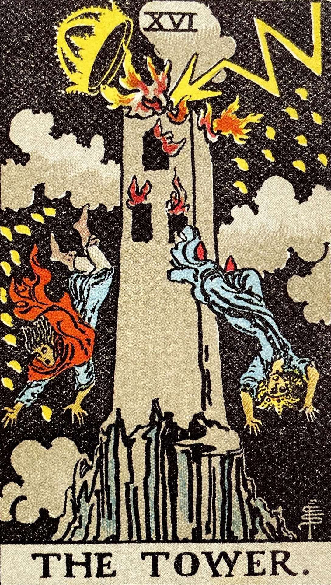
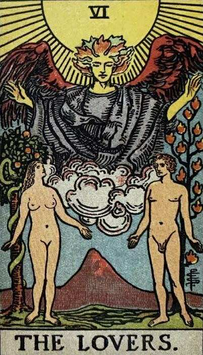

XIX - The Sun (Moon/Tower): Material happiness, fortunate marriage, contentment. Reversed: The same in a lesser sense.

XVIII - The Moon (Star, Sun/ x): Hidden enemies, danger, calumny, darkness, terror, deception, error. Reversed: Instability, inconstancy, silence, lesser degrees of deception and error.

XVII - The Star (Devil, Moon, Tower/ x): Loss, theft, privation, abandonment, althought some suggest healing, hope and bright prospects in the future. Reversed: Arrogance, impotence, haughtiness.

XV - The Devil (Star/ x): Ravage, violence, force, vehemence, ectraordinary efforts, fatality, that which is predestined but not for this reason, evil. Reversed: Evil fatality, weakness, pettiness, blindness.

XVI - The Tower (Star/ Sun): Misery, distress, ruin, indigence, adversity, calamity, disgrace, deception. Reversed: The same in a lesser degree, oppression, imprisonment, tyranny.

VI - The Lovers (Sun, Star/ Moon): Attraction, love, beauty, trials overcome. Reversed: Failure, foolish designs.

| Year | Sun | Moon | Star | Devil | Tower | Lovers |
|---|---|---|---|---|---|---|
| 746 | Sun was the first to appear in this world, born from hope and aspiration of the human kind. | ---------- | ---------- | ---------- | ---------- | ---------- |
| 1000-1200 | 1000-Creation of Feat of Ternary. 1200-Sun continue building Feat of Ternary. |
---------- | ---------- | ---------- | ---------- | ---------- |
| 1526 | ---------- | Moon was the second to appear, born from a witch. | ---------- | ---------- | ---------- | ---------- |
| ~1600 | 1601, sense a new source of light arise. | ---------- | Star was the second to appear, born from a doll maker family as a mixed child of a human and a fairy. Meeting Sun for the first time as small kid. |
---------- | ---------- | ---------- |
| 1800-1900 | Sun split the world into half: Eastern Sol / Western Mona. Meet Moon and form a relationship. |
1800, Meet Sun and form a relationship. Control half the world (Western Mona). 1805, Meet Star through Sun. 1869, Encounter Devil. |
1805, Meet Star through Sun. | 1800, Devil was the third to appear. Naturally born to be a sinister source, secretly growing from civil war inside Darkness. 1869, Encounter Moon. 1900, Meet Sun through Moon. |
---------- | ---------- |
| 1945 | Senses the imbalance rises between Illumination and Darkness | ---------- | ---------- | ---------- | Tower was the forth to appear. Born from Darkness, war, suffering and casualty. Always representing vanquished and defeated side of the war. | ---------- |
| 2032 | ---------- | ---------- | ---------- | ---------- | Discover the enchantment of teleportation by bending time holes and start jumping to the future. | ---------- |
| 2050 | Traveling through multiple timeline and different world and encounter Tower. | ---------- | ---------- | ---------- | Encounter Sun while trying to break into the timeline where Tower is dead. | ---------- |
| 3812-5000 | 3820, seeking help from different entity to heal Tower. | After 3812, cutting Devil off after Tower's death. Try reviving Tower using black magic. This whold process takes up to 2000 years. |
3812, assassinate and consume Tower in order to receive a human form (this explains why Devil and Tower look alike). Having a body but not the power to take over the big tower. Devil creates their own world 12 meters under the tide level. |
Recreating Tower's body from her skills from making dolls. Healing Tower by her abilities. This whold process takes up to 2000 years. | Remain as a rotten, incomplete body with nothing but a soul trapped as a dark blood clots. | ---------- |
| 5000-6000 | Improving Eastern Sol while secretly helping Devil to escape from Satan. | Relationship with Devil is built again with Sun being mediator. | 5912, Finishing the process of recreating Tower. | Running from Satan, hiding in different timeline and world. Living in Eastern Sol and Weastern Mona with Sun and Moon like a parasite. | 5912, Tower is revived with a body but still remain a dead corpse. Can't produce enough energy to survive. | ---------- |
| ~6000-7500 (The Apocalypse) | Forming a team with Moon and Devil, standing agaisnt Satan. | Forming a team with Sun and Devil, standing agaisnt Satan. | Does not want to get involved in the war but provide small support from a far. | One of main reason for this war, standing with Sun and Moon to fight against Satan. 7216, being eaten by wicked air of the war, Devil falls into a long coma, also seen as hibernation. |
Revive again from genocide and and suffering. | ---------- |
| ~After 7500 | Dissapear for 2000 years. | ---------- | ---------- | After the Apocalypse, the human part in Devil is wicked, rotten to the core and cannot be saved, leading to the mother world to replicate to thousands of error reality. | Take care of The NEw World post apocalypse and live under disguise after the war. | ---------- |
| 9000-9633 (The Present) | Require a Treaty for the world and realms. Returning The Gate of Time to Star, preventing outsiders to travel throughout timelines. | ---------- | Takiing The Gate of Time back from Sun. Hiding it from the world and protecting it with her partner. | Living like a junky days after days but still maintain to attend Church every Saturday to balance yin and yang from the inside as Sun required. | Secretly being the cause for every last fights of the war. | ---------- |